Dijital Ouroboros: Geleceğin Arkeolojisi
Tarih Tekerrürden İbarettir: Sunucudan Ayrılış ve Eve Dönüş
Dijital Ouroboros
Alt Başlık: Tarih Tekerrürden İbarettir: Sunucudan Ayrılış ve Eve Dönüş
🐍 Ouroboros Nedir? > Antik mitolojide “kendi kuyruğunu yiyen yılan” sembolüdür. Sonsuz döngüyü, kendini yeniden yaratmayı, başlangıcın son, sonun ise başlangıç olduğunu simgeler. > Yazılım dünyası bir Ouroboros’tur. Sektör sürekli “eskiyi” (kuyruğunu) yer, onu sindirir ve “yeni” bir deriyle (modern teknolojiyle) tekrar ortaya çıkarır. Bugün inceleyeceğimiz Next.js ve Modern Mimari, aslında 20 yıl önce terk ettiğimiz JSF mimarisinin “sindirilmiş ve yeniden doğmuş” halidir.
🎯 Bakış Açımız
Bu sunum, teknolojileri birbiriyle yarıştırmaktan ziyade, birlikte geçtiğimiz 25 yıllık yolu anlamlandırma çabasıdır.
- Değişimi Okumak: Teknolojilerin neden değiştiğini ve o günün şartlarında hangi ihtiyaca cevap verdiğini hatırlamak.
- Sihrin Arkasına Bakmak: Bugün “standart” kabul ettiğimiz kolaylıkların arkasında yatan mühendislik mirasını fark etmek.
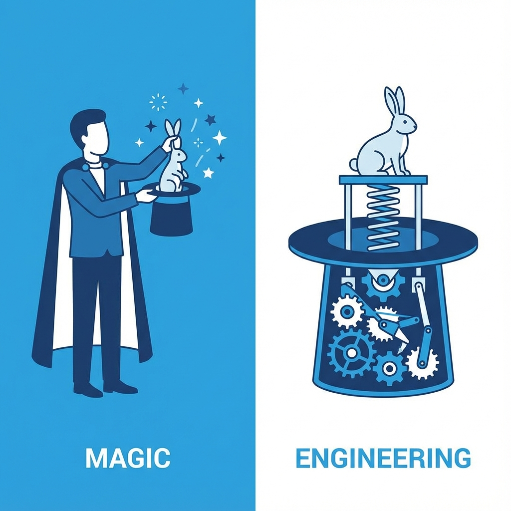
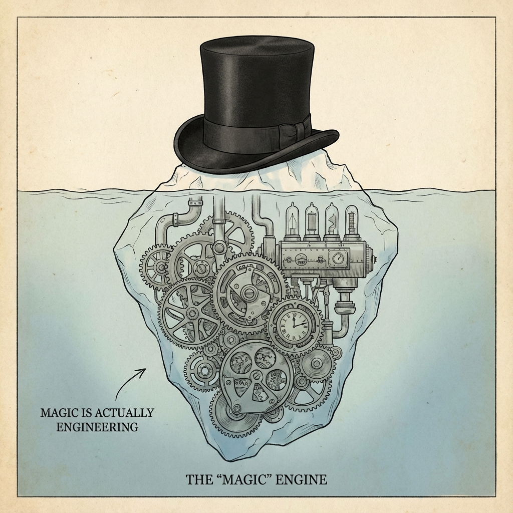
🗺️ Yol Haritamız
Bu oturumu tek taraflı bir anlatımdan ziyade, birlikte çıkacağımız teknik bir keşif gezisi olarak kurgulamaya çalıştım.
Rotamızda üç ana durak var:
🔍 Görünmeyene Odaklanmak: Kodun satır aralarında kalan; ViewState, Closure veya Lifecycle gibi arka plan mekanizmalarının aslında işi nasıl sırtlandığını incelemek.
🎭 Bağlantıları Kurmak: Bugün “devrimsel” dediğimiz Server Actions veya RSC gibi kavramların, aslında geçmişteki (RPC, SSR) hangi köklü çözümlerin modern birer yorumu olduğunu fark etmek.
⚖️ Teraziyi Anlamak: Yazılımda “en iyi” çözümün olmadığını hatırlayıp; RAM vs Bant Genişliği gibi mimari takasların (trade-offs) neden yapıldığını konuşmak.
⚖️ Kararlarımıza Yön Veren Etkenler
Yazılım mimarisinde tercihlerimizi belirlerken, özellikle şu iki teknik gerçekliğin bizi sıkça yönlendirdiğini görüyoruz:
Not
1. Veriye Olan Mesafe (Data Proximity) İş mantığını kullanıcının cihazında (Client) kurduğumuzda, veriye ulaşmak için ağ üzerinden defalarca gidip gelmemiz gerekebiliyor (Network Waterfall). Mantığı verinin olduğu yere, yani sunucuya taşıdığımızda ise veritabanına erişim neredeyse anlık hale geliyor.
Not
2. Güvenlik İhtiyacı Hassas iş kurallarını ve API anahtarlarını tarayıcıya göndermek, her zaman yönetilmesi gereken bir risk oluşturmuştur. Bu hassas yükü sunucunun güvenli alanında tutmak, mimari kararlarımızda belirleyici bir rol oynuyor.
🕰️ Mimarinin Doğası Üzerine
Bu 25 yıllık sürece baktığımızda, aslında bir “teknoloji yarışı”ndan ziyade, tarihsel bir döngüye şahitlik ediyoruz.
Not
“Mükemmel mimari yoktur, sadece o anki bağlama uygun çözümler vardır.”
Bugün bize “eski” veya “yetersiz” görünen teknolojiler, aslında kendi dönemlerinin en büyük problemlerini çözen devrimsel adımlardı. Tıpkı bugün “modern” dediğimiz çözümlerin, yarın bir başka ihtiyaca cevap vermek için yerini yenilerine bırakacağı gibi. Bizim amacımız bu sarkaç hareketini ve nedenlerini doğru okuyabilmek.
Önemli Not: “Eskiye Dönmüyoruz, Spiral Çıkıyoruz”
Bu sunum boyunca JSF (2006) ile Next.js (2024) arasındaki benzerlikleri göreceğiz. Bu varsayım doğru olsa da, “Eskiye dönüyoruz” demek yanlış olur.
Sarkaç geri dönüyor ama bir üst seviyeden dönüyor: - JSF: Sunucu odaklı, ama modern tooling yok, type safety zayıf - Next.js: Sunucu odaklı + TypeScript end-to-end + Modern DX + Edge computing (Burada jsf yada herhangi bir server dili ile yazilmis bir programlama dili neden type safety zayıf bunu soru olarak sorabiliriz.)
Bir sarkaçtan çok, yukarı doğru bir spiral hareketi bu. Her döngüde bir önceki çözümün öğrendiklerini alıp, yeni teknolojiyle harmanlıyoruz.
Yol Haritamız

Web Mimarisi Evrimi Timeline
🎯 Üç Temel İlke: Değişmeyen Hakikatler
Bu yolculukta tekrar tekrar göreceğiniz üç evrensel hakikat var. Bunları baştan bilmek, teknolojiler arasındaki geçişleri anlamanızı kolaylaştıracak.
İlke 1: State Management Asla Kaybolmaz, Sadece Yer Değiştirir
Durum yönetimi web’in temel problemidir. HTTP protokolü “stateless” (durumsuz) olduğu için, kullanıcının durumunu bir yerde tutmalıyız:
- JSF (2006): Sunucu RAM’inde (Session + ViewState)
- React SPA (2015): Tarayıcı hafızasında (Redux, Context)
- Next.js (2024): Hibrit (Sunucu + Client, closure ile)
Değişen: Nerede saklandığı
Değişmeyen: Saklanması gerektiği

State Management Evrimi
State Saklama Yöntemlerinin Evrimi
Sunucunun kullanıcıyı “hatırlaması” için kullanılan yöntemler de evrim geçirdi:
| Dönem | Yöntem | Teknoloji | Artısı | Eksisi |
|---|---|---|---|---|
| 1990’lar | Dosya (Disk) | Text Files | Basit | Çok yavaş, kilitlenme |
| 2000’ler | RAM (In-Memory) | Servlet Session | Çok hızlı | Sunucu kapanırsa uçar |
| 2005-2015 | Veritabanı | SQL Session Table | Kalıcı, Web Farm | DB’yi yorar |
| 2010+ | Cache Sunucusu | Redis, Memcached | Hızlı + Paylaşılır | Ekstra altyapı |
| 2015+ | Client-Side | JWT Token | Sunucu masrafsız | Logout yönetimi zor |
Not
Bankacılık ve yüksek güvenlikli sistemler bugün bile Redis ile birlikte veritabanını kullanır. “Kesinlikle kaybolmaması gereken” session verileri için performans kaybı göze alınır.
İlke 2: Abstraction Arttıkça Kontrol Azalır
Abstraction (soyutlama), kodun üstünü örtmektir. Ne kadar çok örtersen, o kadar az görürsün ve kontrol edersen.
- Düşük Abstraction (PHP): Her şeyi görürsün, her şeyi manuel yaparsın
- Orta Abstraction (JSF): Lifecycle gizli, ama yönetilebilir
- Yüksek Abstraction (Modern frameworks): “Magic” gibi çalışır, ama hata ayıklama zor
Tradeoff: Rahatlık vs Kontrol
İlke 3: Complexity Yok Edilemez, Sadece Transfer Edilir
Fizikteki “Enerjinin Korunumu Yasası” gibi, yazılımda da “Karmaşıklığın Korunumu” vardır. - JSF: Karmaşıklık sunucuda (Lifecycle, Session) - SPA: Karmaşıklık istemcide (State sync, Tooling)
- Modern Stack: Karmaşıklık dağıtıldı (Sunucu + İstemci + Build Time)
Karmaşıklık orada bir yerde
Sonuç: Karmaşıklığı yok edemezsiniz, sadece en az zarar vereceği yere taşırsınız.
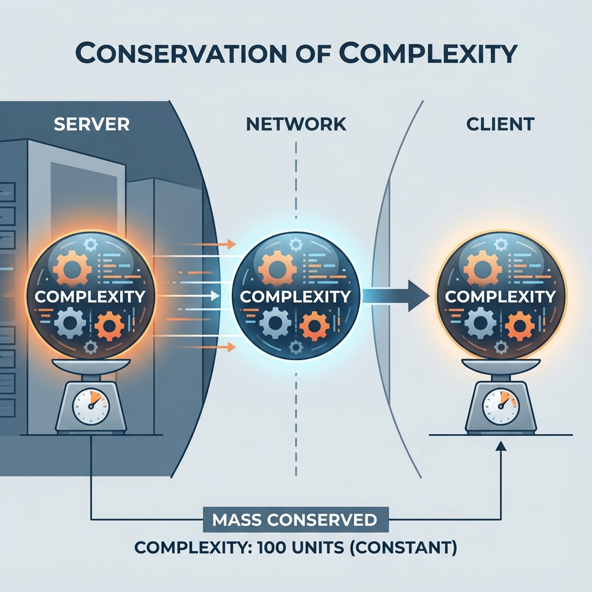Karmaşıklık orada bir yerde
📈 Karmaşıklık Yönetimi Üzerine Bir Bakış
Sektörün tekrar sunucu odaklı (SSR) yaklaşımlara yönelmesindeki temel motivasyonlardan biri, “Arızi Karmaşıklık” (Accidental Complexity) dediğimiz; işin kendisinden değil, kullandığımız araçlardan kaynaklanan yükü hafifletme arayışıdır.
Bu durumu iki farklı mimari yaklaşım üzerinden şöyle okuyabiliriz:
Ayrık Yapı (Geleneksel SPA + REST): Veri akışını sağlamak için; Backend Controller, DTO, API Client, Client State (Store) ve UI Component gibi birçok katmanın senkronize edilmesi gerekebiliyor.
Bütünleşik Yapı (Modern SSR): Veritabanı erişimi ve Arayüz (UI) mantığı aynı çatı altında (colocation) bulunuyor. Bu yakınlık, aradaki “tutkal kod” (glue code) ihtiyacını azaltarak, geliştiricinin doğrudan iş mantığına odaklanmasına olanak tanıyor.

Karmaşıklık Eğrisi
1️⃣ Başlangıç: PHP Çağı (2000-2005)
Bağlam: 2000’lerin Web’i
- İnternet hızları: 56k modem, ADSL yeni yeni
- E-ticaret patlaması (Amazon, eBay)
- Web uygulamaları çoğunlukla basit CRUD
- Güvenlik henüz birincil öncelik değil
PHP’nin “Tek Dosya” Felsefesi
PHP, web geliştirmeyi demokratikleştirdi. Herhangi biri bir .php dosyası oluşturup FTP ile sunucuya atabilirdi.
Örnek: Kullanıcı Listesi (users.php)
<?php
// Veritabanı bağlantısı
$conn = mysql_connect("localhost", "root", "password");
mysql_select_db("myapp", $conn);
// Veri çekme
$result = mysql_query("SELECT * FROM users");
?>
<!DOCTYPE html>
<html>
<head><title>Kullanıcılar</title></head>
<body>
<h1>Kullanıcı Listesi</h1>
<table border="1">
<tr><th>ID</th><th>İsim</th><th>Email</th></tr>
<?php while($row = mysql_fetch_assoc($result)): ?>
<tr>
<td><?= $row['id'] ?></td>
<td><?= $row['name'] ?></td>
<td><?= $row['email'] ?></td>
</tr>
<?php endwhile; ?>
</table>
</body>
</html>✅ PHP’nin Güçlü Yönleri
- Locality of Behavior: Her şey bir yerde, anlaşılır
- Hızlı Geliştirme: Fikir → Kod → Canlı: 10 dakika
- Düşük Öğrenme Eğrisi: HTML biliyorsanız, PHP öğrenebilirsiniz
- Deployment Basitliği: FTP yeterli
Not
O dönemde CI/CD yoktu. Canlıdaki dosyayı Notepad ile açıp editlemek “normal” sayılırdı. Rollback stratejisi: “Eski dosyanın yedeğini index_bak.php yapmaktı.” Basit ama tehlikeli.
❌ PHP’nin Sınırları
- Güvenlik Açıkları: SQL Injection (yukarıdaki kod savunmasız!)
- Bakım Sorunu: 5000 satırlık
index.phpdosyaları - Separation of Concerns Yok: SQL, Business Logic, HTML hepsi bir arada
- Ölçekleme Zorluğu: Session yönetimi, code reusability
- Tip Güvenliği Yok: Runtime hatalar yaygın
Neden Yeterli Değildi?
2005’e gelindiğinde, web uygulamaları karmaşıklaştı: - Banka sistemleri - Kurumsal ERP’ler - Çok kullanıcılı sistemler - Güvenlik kritik hale geldi
🛠️ Kaosun İçinden Düzen Arayışı
Spaghetti kodun getirdiği bakım maliyeti ve güvenlik riskleri arttıkça, sektör olarak bir “Yapılacaklar Listesi” (Wishlist) oluşturmaya başlandı. Artık sadece kod yazmak değil, mühendislik yapmak isteniyordu.
İhtiyaçlar netleşmişti:
Ayrışma (Separation of Concerns): SQL sorguları ile HTML etiketleri artık iç içe olmamalıydı. Veri (Model), Arayüz (View) ve İş Mantığı (Controller) birbirinden ayrılmalıydı.
Tekrar Kullanılabilirlik (Reusability): Her form için tekrar tekrar
<input>ve<label>yazmak yerine,MyInputgibi hazır bir yapı (Component) kullansak ve her yerde standart olsa?Tip Güvenliği (Type Safety):
$degiskenher şey olabilir. Ama bizUser userdediğimizde, onun gerçekten bir “User” olduğundan emin olmak istiyorduk. Hataları müşteriden önce derleyici (Compiler) yakalamalıydı.State Yönetimi:
$_SESSION['sepet']gibi manuel yönetim yerine, sunucu kullanıcının durumunu bizim için otomatik takip etmeliydi.
“PHP’nin basitliğini koruyabilir, ama Java’nın güvenliğini ve yapısını ekleyebilir miyiz?” Cevap: JSP ve JSF
🔍 JSF’in Kalbi: Request Processing Lifecycle
Önemli
“Çoğu geliştirici JSF’i ‘Sihirli bir kutu’ olarak görür. Bir inputText koyarsınız, veritabanına gider. Arada ne olur? Bilinmez. Bugün o kutuyu açıyoruz. Göreceğimiz şey sihir değil; HTTP protokolünü Java nesnelerine, Java nesnelerini HTML’e çeviren devasa bir ’Çeviri Motoru’dur.”
6 Fazlı Döngü: Her İstekte Aynı Hikaye
Bir JSF sayfasına tıkladığınızda, sunucu tarafında bu 6 adım asla şaşmaz. Modern frontend framework’lerinde useEffect karmaşası yaşarken, JSF 20 yıldır bu katı disiplini uygular.
JSF Lifecycle Faz Akışı
Detaylı Görsel
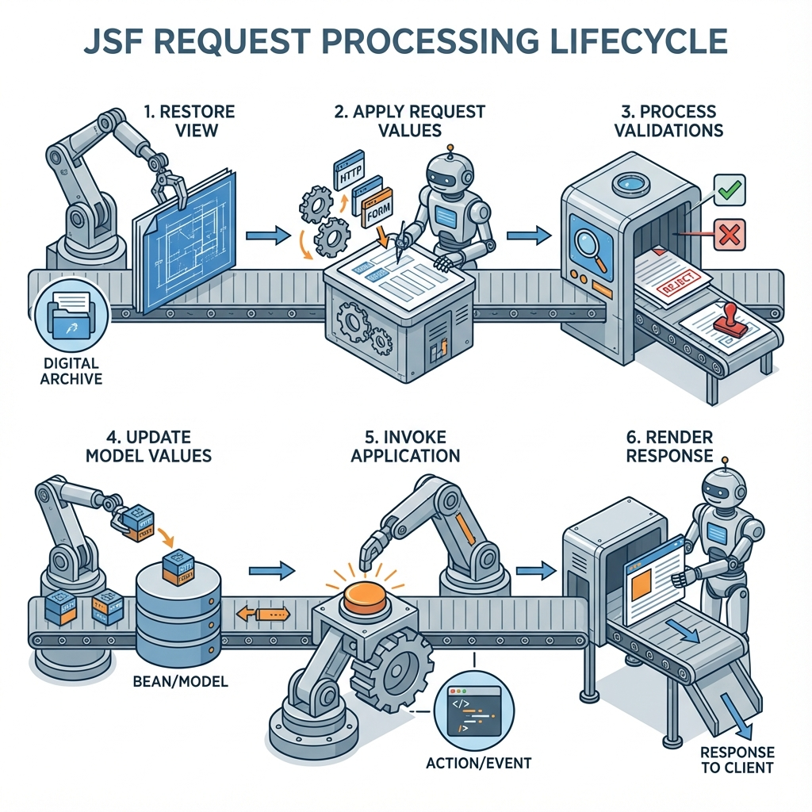JSF Lifecycle Faz Akışı detaylı
Ham madde (Request) girer
- İstasyon (Restore)
- İstasyon (Apply) …
- Ürün (Response) çıkar. Hatalı ürün (Validation Error) hattan erken atılır.
Faz 1, 2, 3: Verinin Yolculuğu Başlıyor
Senaryo: Kullanıcı “Kullanıcı Adı”nı girdi ve “Giriş” butonuna bastı.
1. Restore View (Hafızayı Çağır)
JSF bakar: “Bu kullanıcı daha önce bu sayfada mıydı?”
- Evet ise: Sunucu RAM’inden o sayfanın nesne ağacını (
UIViewRoot) bulur - Hayır ise: Yeni bir
UIViewRootoluşturur
Analiz: React’in “Re-hydration” (istemci tarafında canlandırma) işleminin sunucu tarafındaki atasıdır.
2. Apply Request Values (Ham Veriyi Al)
HTTP POST isteğindeki input_1=Ahmet parametresini okur:
- İlgili
UIInputbileşenini bulur - Değerini set eder
- Henüz Java Bean’e dokunmaz! Sadece UI bileşeni güncellenir
3. Process Validations (Kapı Bekçisi)
Bileşende required="true" veya <f:validateLength> var mı? - Kontrol edilir - Hata varsa: Yaşam döngüsü burada kesilir ve Faz 6’ya atlanır (Hata mesajı göstermek için) - Başarılı ise: Devam et
Faz 4 ve 5: Asıl İş Şimdi Yapılıyor
4. Update Model Values (Java ile Buluşma)
Validasyon geçtiyse, UI bileşenindeki “Ahmet” değeri, arka plandaki Java Sınıfına (UserBean.username) yazılır.
Kritik Nokta: Tip dönüşümü (Converter) burada yapılır: - String “10” → Integer 10
5. Invoke Application (Aksiyon Zamanı)
Butona bağlı olan metodu (#{userBean.login}) çalıştırır: - Veritabanı sorgusu - İş mantığı - Navigasyon (Sayfa yönlendirmesi)
Kod Örneği (Backing Bean):
Not
Dikkat ettiniz mi? Sizin yazdığınız Java kodu (login metodu) ancak 5. aşamada çalıştı. Önceki 4 aşamayı JSF sizin için halletti. Modern frameworklerde (React, Angular) ise validasyonu, veri binding’i, tip dönüşümünü manuel olarak kodlamak zorundasınız.
Component Tree: UI Nerede Yaşıyor?
UI bileşenlerimiz (Button, Input, Panel) nerede yaşıyor? Bu sorunun cevabı, mimarinin kalbidir.
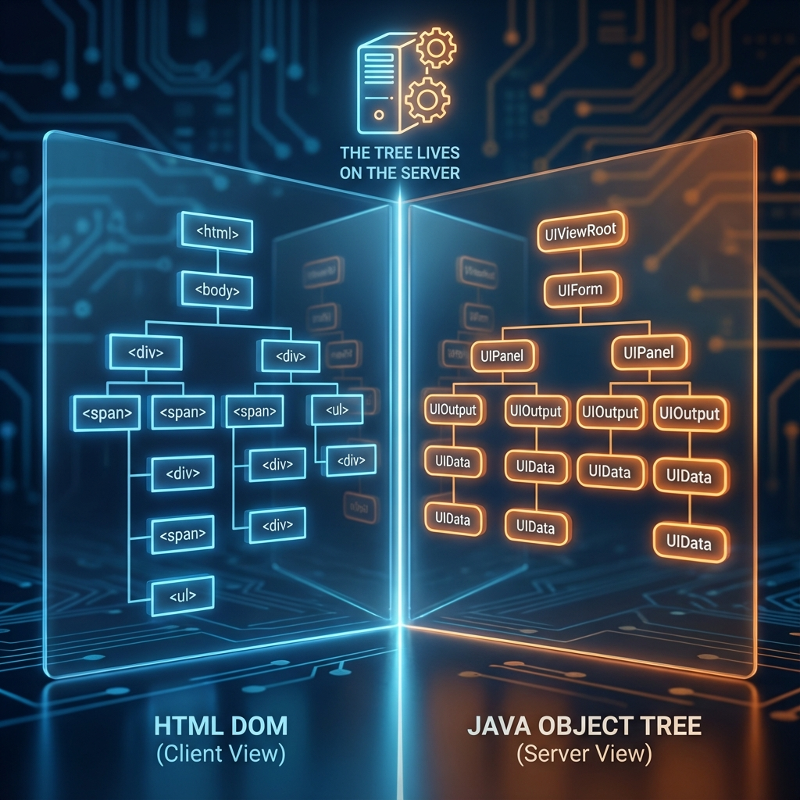Component Tree Yapısı
İpucu
Sol tarafta HTML DOM (Tarayıcı). Sağ tarafta aynadaki yansıması: Java Nesne Ağacı (Sunucu). Birebir eşleşmeyi gösterir.
A. JSF: “Ağaç Sunucuda Yaşar”
JSF’de UIViewRoot sunucu hafızasındadır (Heap). Tarayıcı sadece bir “yansıtıcıdır” (Renderer). * Avantaj: Güvenli, veritabanına yakın. * Dezavantaj: Sunucu belleği şişer (Session Replication derdi).
Component Tree Yapısı
B. React SPA: “Ağaç Tarayıcıya Taşındı”
2010’larda ağacı söküp kullanıcının tarayıcısına (Virtual DOM) taşıdık.
Avantaj: Sunucu rahatladı (Stateless), etkileşim hızlandı.
“Virtual DOM” yani tarayıcı hafızasında DOM’un bir kopyasını tutmak. İşte JSF bunu 2004 yılında “Component Tree” adıyla yapıyordu, tek farkı bunu tarayıcıda değil sunucuda yapmasıydı. Fikir aynı, yer farklı.
Bedel: Kullanıcının telefonu ısındı, “Loading…” spinner’ları hayatımıza girdi.
İpucu
Eskiden sunucu, müşteriye monte edilmiş hazır bir mobilya (HTML) gönderirdi. Müşteri sadece paketi açar ve kullanırdı.
SPA ile biz bu modeli değiştirdik. Artık müşteriye tahtaları (JSON), vidaları ve bir de kurulum kılavuzunu (JavaScript) kargoluyoruz.
Dedik ki: “Bizim depoda (Sunucu) montaj yapmak maliyetli. Sen parçaları al, kendi evinde (Tarayıcı), kendi elektriğini ve zamanını (CPU ve Pil) harcayarak monte et.”
C. Modern Mimari (RSC): “Ağaç Eve Dönüyor”
React Server Components (RSC) ile ağacın gövdesini tekrar sunucuya taşıdık, sadece yapraklarını (Interactivity) tarayıcıda bıraktık. Modern React (Next.js Server Actions), sadece veriyi değil, fonksiyonun o anki ortamını (Closure) dondurur.(javascript closure)
İpucu
Bunu bir Restoran Menüsü üzerinden anlayabiliriz: > - Client Side (Eski): Garson sana Yemek Tarifi Kitabı getirir. Sen masada oturup o tarife bakarak yemeği kendin yaparsın. (Tarayıcı yorulur, JS indirir) - Server Side (RSC): Aşçı mutfakta tarife bakar, yemeği yapar. Garson sana Hazır Yemek getirir. (Tarayıcı sadece yer/gösterir)

RSC Class Diyagramı
Gizli Kahraman: Component Tree (UIViewRoot)

Component Tree Evrimi
İpucu
Zamanla ağacın gövdesini sunucuya taşıdık, sadece yapraklarını tarayıcıda bıraktık.
HTML tarafı:
Java tarafı (Sunucu RAM’i):
Analiz: Stateful vs Stateless
- JSF, sayfadaki her bir etiketin Java nesnesi karşılığını sunucu belleğinde (Session) tutar
- ViewState: Bu ağacın durumunu koruyan şifreli bir string’dir
- Maliyet: 1 Kullanıcı = 10KB RAM ise, 100.000 Kullanıcı = 1GB RAM (Sadece arayüz durumu için!)
PrimeFaces ve jQuery Gerçeği (The Wrapper)
Uyarı
Geliştirici sırrı açığa çıkıyor! PrimeFaces bir büyü değildir. PrimeFaces, sunucu tarafında Java ile konfigüre edilmiş devasa bir jQuery fabrikasıdır.
Kod İncelemesi:
Siz yazarsınız (JSF/PrimeFaces):
Tarayıcıda oluşan (Generated HTML & Script):
PrimeFaces jQuery Üretimi
PrimeFaces jQuery Üretimi (v2)
İpucu
En dışta: JSF Component.
İçinde: PrimeFaces Renderer.
En içte: jQuery Plugin.
Kullanıcı sadece en dışı görür.
İpucu
“Siz Java yazarsınız, o sizin yerinize jQuery scripti yazar ve sayfaya basar. Bugün jQuery kullanmak ‘ayıp’ sayılıyor ama PrimeFaces kullandığınızda aslında en ağır şekilde jQuery kullanıyorsunuz. Sadece elinizi kirletmiyorsunuz.”
Renderer Mekanizması (Görünümden Bağımsızlık)
JSF’nin en az anlaşılan gücü: “Write Once, Render Anywhere”
Bileşen (Logic) ile Görüntü (Renderer) ayrıdır: - Teorik olarak, JSF kodunuzu hiç değiştirmeden, sadece “Renderer” değiştirerek çıktıyı: - HTML’den → Android XML’ine - PDF’e - JSON API’ye
çevirebilirsiniz.
Bu mimari esneklik, modern kütüphanelerin çoğunda (Tight Coupling yüzünden) yoktur.

Renderer Mekanizması
JSF’in Bize Verdiği vs Bizden Aldığı
| JSF’in Bize Verdiği (Abstraction) | Bizden Aldığı Bedel (Cost) |
|---|---|
| HTML/JS yazmadan UI geliştirme | Sunucu CPU ve RAM kullanımı (Component Tree) |
| Otomatik Validasyon ve State Yönetimi | Esneklik kaybı (Lifecycle dışına çıkmak zordur) |
| Yüksek Güvenlik (Business Logic sunucuda) | Network trafiği (Her tıklamada sunucuya git-gel) |
| Tip Güvenliği (Java end-to-end) | Öğrenme eğrisi (Lifecycle, Scopes, Converters) |
| Component Reusability | Session Replication (Cluster ortamda zorluk) |
Not
JSF döneminde DevOps’un kabusu Stateful Scaling idi. Sunucu RAM’inde session tutulduğu için, bir sunucu çökünce kullanıcı logout olurdu. Çözüm? Sticky Session veya karmaşık Session Replication ayarları (Multicast, JGroups). Deployment, 50MB’lık bir .war dosyasını WildFly’a atmaktan ibaretti ama o sunucuyu ayakta tutmak sanattı.
Not
JSF’in içini açtık. Gördük ki bu bir karmaşa değil, HTTP’nin eksiklerini kapatmak için tasarlanmış çok katı kuralları olan bir devlet dairesi gibi. İşler yavaş ama güvenli yürür, kurallar bellidir.
3️⃣ PrimeFaces Devrimi (2008-2015): JSF’in Altın Çağı
Problem: JSF Çıplak ve Sade
Temel JSF component’leri fonksiyoneldi ama estetikten uzaktı:
Sorunlar: - Pagination yok (kendin yaz) - Sorting yok - Filtering yok - AJAX yok - Görsel olarak 1990’lar stili
PrimeFaces’in Getirdiği Devrim
JSF’i modern, zengin ve kullanılabilir hale getirdi.
PrimeFaces theme
Aynı Tablo, PrimeFaces ile:
<p:dataTable value="#{userBean.users}" var="user"
paginator="true" rows="10"
selectionMode="single" selection="#{userBean.selectedUser}"
filterDelay="1000"
styleClass="myTable">
<!-- AJAX row selection -->
<p:ajax event="rowSelect"
listener="#{userBean.onRowSelect}"
update=":form:userDetail" />
<!-- Sortable ve filterable column -->
<p:column headerText="İsim"
sortBy="#{user.name}"
filterBy="#{user.name}"
filterMatchMode="contains">
<h:outputText value="#{user.name}" />
</p:column>
<p:column headerText="Email"
sortBy="#{user.email}"
filterBy="#{user.email}">
<h:outputText value="#{user.email}" />
</p:column>
<!-- Action buttons -->
<p:column headerText="İşlemler">
<p:commandButton icon="ui-icon-pencil"
action="#{userBean.edit(user)}"
update=":form:editDialog"
oncomplete="PF('editDialog').show()" />
<p:commandButton icon="ui-icon-trash"
action="#{userBean.delete(user)}"
update="@form">
<p:confirm message="Silmek istediğinize emin misiniz?" />
</p:commandButton>
</p:column>
</p:dataTable>
<!-- Confirm Dialog -->
<p:confirmDialog global="true" showEffect="fade">
<p:commandButton value="Evet" styleClass="ui-confirmdialog-yes" />
<p:commandButton value="Hayır" styleClass="ui-confirmdialog-no" />
</p:confirmDialog>12 satırda: - ✅ Pagination - ✅ Client-side filtering - ✅ Server-side sorting - ✅ Row selection (AJAX) - ✅ Modal dialog integration - ✅ Confirmation popups - ✅ Themeable UI
PrimeFaces AJAX: Partial Page Rendering
JSF’ bincelerce fonksiyonalite ve özellik sunuyordu. PrimeFaces bunları daha basit bir şekilde sunuyordu:
<h:form id="myForm">
<p:inputText id="username" value="#{bean.username}" />
<!-- AJAX blur event -->
<p:ajax event="blur"
listener="#{bean.checkUsername}"
update="usernameMsg" />
<h:outputText id="usernameMsg"
value="#{bean.usernameMessage}"
style="color: #{bean.usernameValid ? 'green' : 'red'}" />
</h:form>Kullanıcı input’tan çıktığında:
- AJAX request sunucuya gider
checkUsername()metodu çalışır- Sadece
usernameMsgcomponent’i güncellenir - Sayfa yenilenmez!
Bu, 2010’da SPA benzeri bir deneyimdi.
PrimeFaces Showcase: Ne Mümkündü?
Component’ler: - p:dataTable: Advanced grid - p:fileUpload: Drag & drop file upload - p:chart: Google Charts entegrasyonu - p:schedule: Full calendar - p:tree: Hierarchical tree view - p:dialog: Modal dialogs - p:galleria: Image gallery - p:carousel: Carousel slider
İpucu
Karmaşık İç İçe UI’lar İçin: Dialog içinde dialog, form içinde tablo, nested yapılar gerektiren enterprise uygulamalarda PrimeFaces çok güçlüdür. p:dialog modal state yönetimi otomatiktir. React’te her modal için visibility state, z-index yönetimi, escape handling manuel yapılmalıdır.
Gerçek dünya örneği:
PrimeFaces + JSF Ekosistemi: Enterprise Standart
2010-2015 arası tipik stack: - Frontend: PrimeFaces + JSF - Backend: EJB veya CDI Beans - ORM: JPA (Hibernate) - Server: WildFly, GlassFish, WebLogic - Database: Oracle, PostgreSQL
Tam stack örnek:
// Entity
@Entity
public class Product {
@Id @GeneratedValue
private Long id;
private String name;
private BigDecimal price;
// getters/setters
}
// Repository (JPA)
@Stateless
public class ProductRepository {
@PersistenceContext
private EntityManager em;
public List<Product> findAll() {
return em.createQuery("SELECT p FROM Product p", Product.class)
.getResultList();
}
}
// Managed Bean
@Named
@ViewScoped
public class ProductBean implements Serializable {
@Inject
private ProductRepository productRepo;
private List<Product> products;
private Product selectedProduct;
@PostConstruct
public void init() {
products = productRepo.findAll();
}
public void onRowSelect(SelectEvent event) {
FacesMessage msg = new FacesMessage("Ürün Seçildi",
((Product) event.getObject()).getName());
FacesContext.getCurrentInstance().addMessage(null, msg);
}
}<!-- View (products.xhtml) -->
<p:dataTable value="#{productBean.products}" var="product"
selectionMode="single"
selection="#{productBean.selectedProduct}">
<p:ajax event="rowSelect" listener="#{productBean.onRowSelect}" />
<p:column headerText="Ürün">#{product.name}</p:column>
<p:column headerText="Fiyat">#{product.price}</p:column>
</p:dataTable>3 dosya:
Product.java(Entity)ProductBean.java(Logic)products.xhtml(View)
Karşılaştırma: Aynı işi modern React SPA ile yaparsanız → 12 dosya (göreceğiz!)
✅ Neden JSF + PrimeFaces Başarılıydı?
- Tam çözüm: UI component’leri + backend + veritabanı tek stack
- Tip güvenliği: Entity → Bean → View, hepsi Java
- AJAX deneyimi: SPA benzeri UX, ama sunucu kontrolünde
- Enterprise desteği: Oracle, Red Hat backing
- Büyük ekosistem: OmniFaces, BootsFaces, vb.
❌ Ama Yetmedi. Neden?
2010’da dünya değişti. iPhone.
4️⃣ Büyük Kopuş: Mobil Çağ ve SPA (2010-2015)
2010’da Ne Değişti?
Teknik gerçek: - iPhone 4 çıktı (2010) - Android patlaması → 2014’te mobil trafik %50’yi geçti - 3G → 4G geçişi
Kullanıcı beklentisi: - “Uygulama gibi” deneyim - Anında geri bildirim, smooth transitions - Offline çalışma
Ama Dur! PrimeFaces Zaten AJAX Yapıyordu?
Doğru! PrimeFaces p:ajax ile partial updates yapıyordu. O halde neden terk edildi?
Teknik Sebepler:
- Sınırlı AJAX: Sadece belirli component’ler update edilebiliyordu
- Sunucu bağımlılığı: Her tıklama sunucuya gidiyordu
- Routing yok: URL değişimi = full page load
- Mobile-first değil: Responsive ama native değil
Sosyal/Kültürel Sebepler (DAHA ÖNEMLİ!):
- “Java eski” algısı (2010’larda güçlendi)
- JavaScript ekosistemi patlaması: npm, Node.js
- Startup kültürü: Hızlı prototip (JSF kurumsal/ağır)
- Açık kaynak momentum: React, Angular GitHub’da patladı
- Mobil developer’lar: JavaScript biliyorlar, Java değil
Önemli
Teknik üstünlük tek başına yeterli değildir. PrimeFaces teknik olarak AJAX yapabiliyordu ama algı değişmişti. “Modern” olmak bir teknoloji sorunu değil, kültürel momentum sorunuydu.
AngularJS ve React’in Vaatleri
AngularJS (2010): Two-way data binding, SPA, tamamen JavaScript
React (2013): Virtual DOM, component-based, “UI = f(state)”
REST API Ideology: Frontend ve Backend tamamen bağımsız → Microservices uyumlu
5️⃣ SPA Dönemi: Karmaşıklık Patlaması (2015-2023)
Spring Boot + React: Yeni Standart
2015-2020 arası tipik startup stack: - Frontend: React + Redux + Axios - API: Spring Boot + REST - Database: PostgreSQL
“12 Dosya Problemi”: Aynı Özellik, Farklı Karmaşıklık
Özellik: Kullanıcı listesi göster, düzenle, kaydet.
React SPA + Spring Boot (2018) - 12 Dosya:
**Backend (7 dosya):**
1. `User.java` (Entity)
2. `UserDTO.java` ← Entity expose etmeyelim!
3. `UserMapper.java` ← DTO ↔ Entity
4. `UserRepository.java`
5. `UserService.java`
6. `UserController.java` ← REST
7. `SecurityConfig.java` ← CORS, JWT
**Frontend (5 dosya):**
8. `User.ts` ← TypeScript (DUPLICATE tanım!)
9. `userApi.ts` ← Axios
10. `userSlice.ts` ← Redux state
11. `UserForm.tsx`
12. `UserPage.tsx`İpucu
JSF (3 Dosya): Paketlenmiş, ısıt-ye hazır yemek (Hızlı ama içeriği değiştiremezsin).
React (12 Dosya): Un, yumurta, şeker, süt… (Tam kontrol ama birleştirmek senin işin).
12 Dosya vs 3 Dosya
12 Dosya vs 3 Dosya detaylı
Accidental Complexity (Arızi Karmaşıklık)
Essential Complexity: İş mantığının doğal karmaşıklığı
Accidental Complexity: Araçların getirdiği karmaşıklık
SPA’da Accidental Complexity:
- Tip senkronizasyonu:
User.javavsUserDTO.javavsUser.ts(3 yerde aynı yapı!) - Mapping katmanı: Entity → DTO → JSON → TypeScript
- Ağ hatası yönetimi: Her API için try-catch, retry, timeout
- State senkronizasyonu: Server vs Client state
- Loading states: Her API için
isLoading,errorstate’leri
Kod Karşılaştırması: User Kaydetme
JSF + PrimeFaces (2010):
2 dosya. Tip güvenliği var. State senkronizasyonu yok.
React SPA - Sadece Frontend Kısmı (Backend 7 dosya ekstra):
// types/User.ts
export interface User {
username: string;
email: string;
}
// store/userSlice.ts (Redux - 40+ satır boilerplate)
export const createUser = createAsyncThunk('users/create', ...);
// components/UserForm.tsx
const [username, setUsername] = useState('');
const [email, setEmail] = useState('');
const dispatch = useDispatch();
const handleSubmit = async (e) => {
e.preventDefault();
await dispatch(createUser({ username, email }));
};Görsel 1: Sol tarafta JSF’in 3 satırlık save metodu, sağ tarafta React’in aynı işi yapan dağıtık yapısı (Slice, Component, API).
Simple vs Complex Code
Diğer SPA Sorunları
- Bundle Size: 1.2 MB JavaScript (ilk yüklemede)
- Waterfall Data Fetching: Component açıldıkça API çağrıları
- SEO: JavaScript yüklenmeden sayfa boş
- Offline Development: Backend API çalışmadan frontend test edilemez
Not
SPA ile birlikte DevOps’un işi Runtime’dan Build Time’a kaydı. * Eskiden: javac -> .war (Bitti) * Şimdi: npm install (500MB node_modules) -> webpack build -> docker build -> k8s deploy. * Sorunlar: CORS ayarları, Nginx history-mode config, Environment variable yönetimi (.env vs Runtime env). Karmaşıklık koddan altyapıya kaydı.
“Killer Feature” Karşılaştırması: DataTable
Senaryo: 10,000 kayıtlık kullanıcı listesi. Pagination, sorting, filtering.
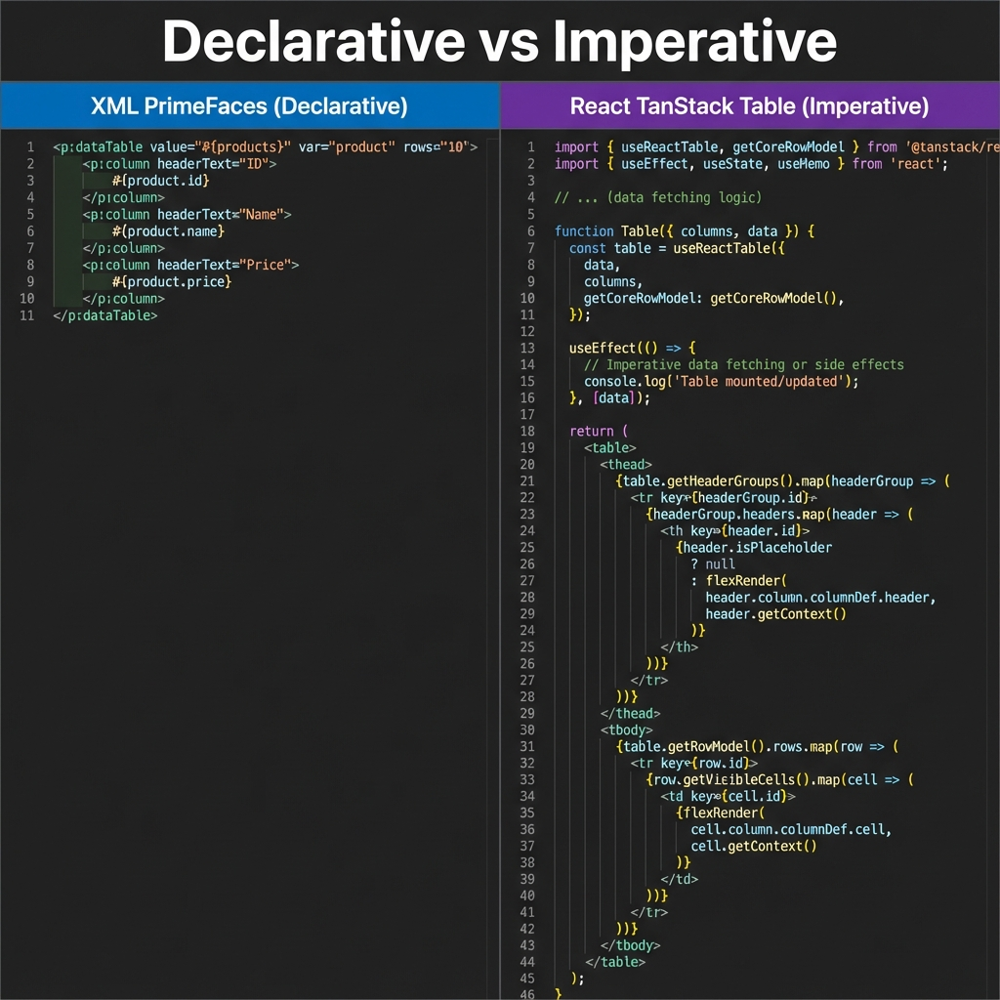Declarative vs Imperative Code
Görsel 2: PrimeFaces’in declarative (ne istediğini söyle) yapısı vs React Table’ın imperative (nasıl yapılacağını söyle) kurulumu.
Not
Veri odaklı işlerde JSF’in ROI (Yatırım Getirisi) rakipsizdir. Bir kurumsal admin panelinde 50 tablo varsa, JSF ile 1 haftada yaparsınız. React ile her tablo için tekerleği yeniden icat edersiniz.
“50 Tablo Gerç” - Neden?
| Özellik | JSF (PrimeFaces) | React (MUI/AntD/TanStack) |
|---|---|---|
| Tablo Kurulumu | 5 satır kod | 50+ satır kod (State + API) |
| API İhtiyacı | ❌ Yok (Doğrudan Bean’e bağlı) | ✅ Şart (REST/GraphQL) |
| “Wiring” (Bağlama) | ✅ Otomatik (Framework yapar) | ❌ Manuel (Her tablo için tekrar) |
| 50 Tablo Süresi | 1 Hafta | 3-4 Hafta (Framework olmadan) |
React’te sorun kütüphane eksikliği değil, “wiring” maliyetidir: Her tabloda pagination, sorting, filtering API’ye bağlanmalı. JSF’de bu bağlantı otomatiktir.
Declarative vs Imperative: AJAX Örneği
Senaryo: “Kaydet” butonuna basınca sadece mesaj güncellensin (sayfa yenilenmesin).
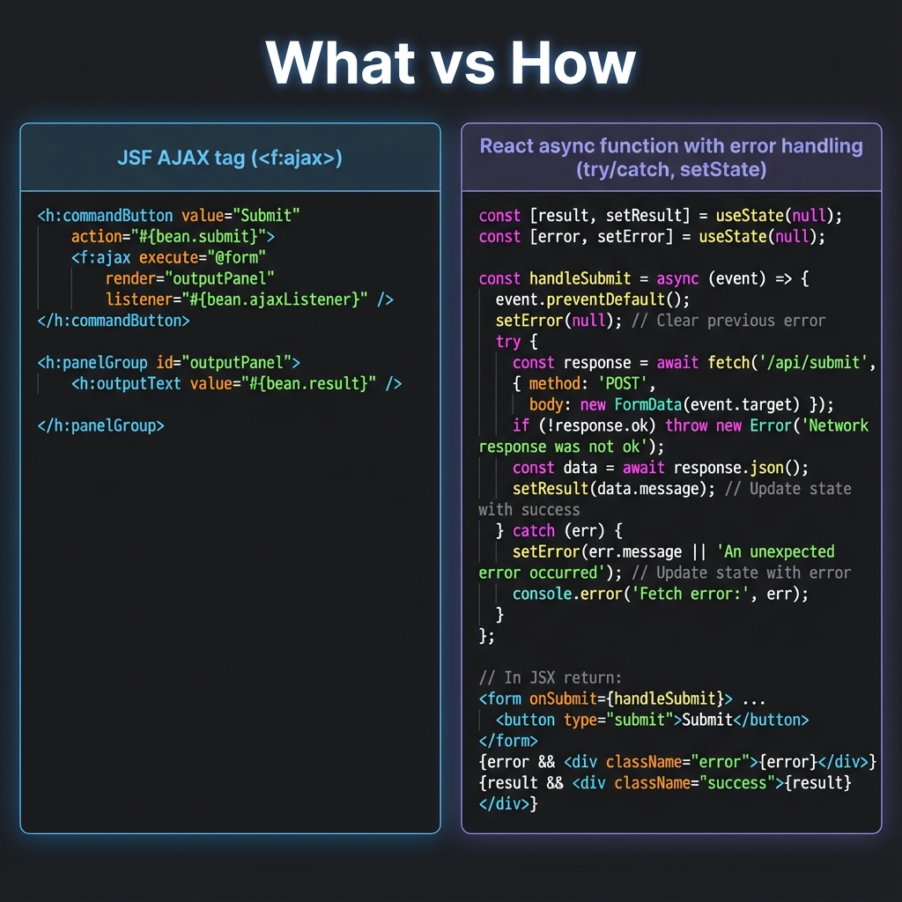What vs How Code
Görsel 3: JSF’te AJAX sadece bir etikettir (<f:ajax>). React’te ise state yönetimi, hata yakalama ve loading durumlarını elle kodlamanız gerekir.Declarative vs Imperative
Fark: JSF’te NE istediğimizi söylüyoruz (render="mesajPaneli"). React’te NASIL yapılacağını adım adım kodluyoruz. Karmaşık mantıkta declarative yaklaşım hatayı azaltır.
Görünmeyen Kod: “Glue Code” Analizi
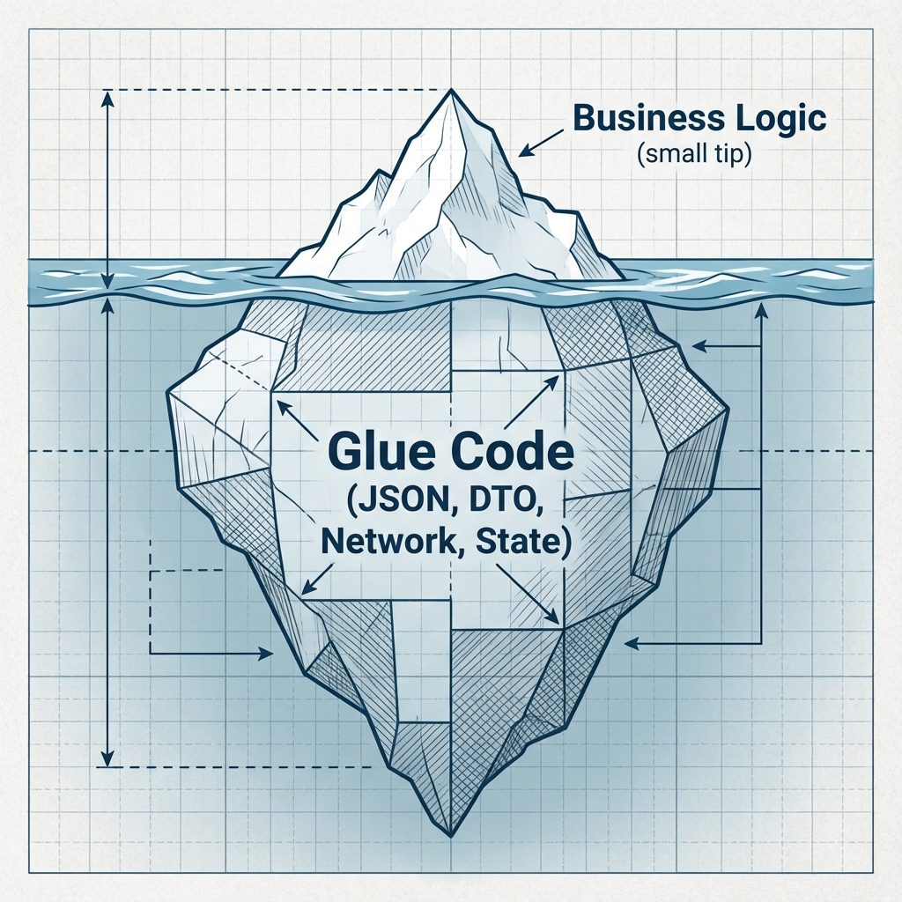 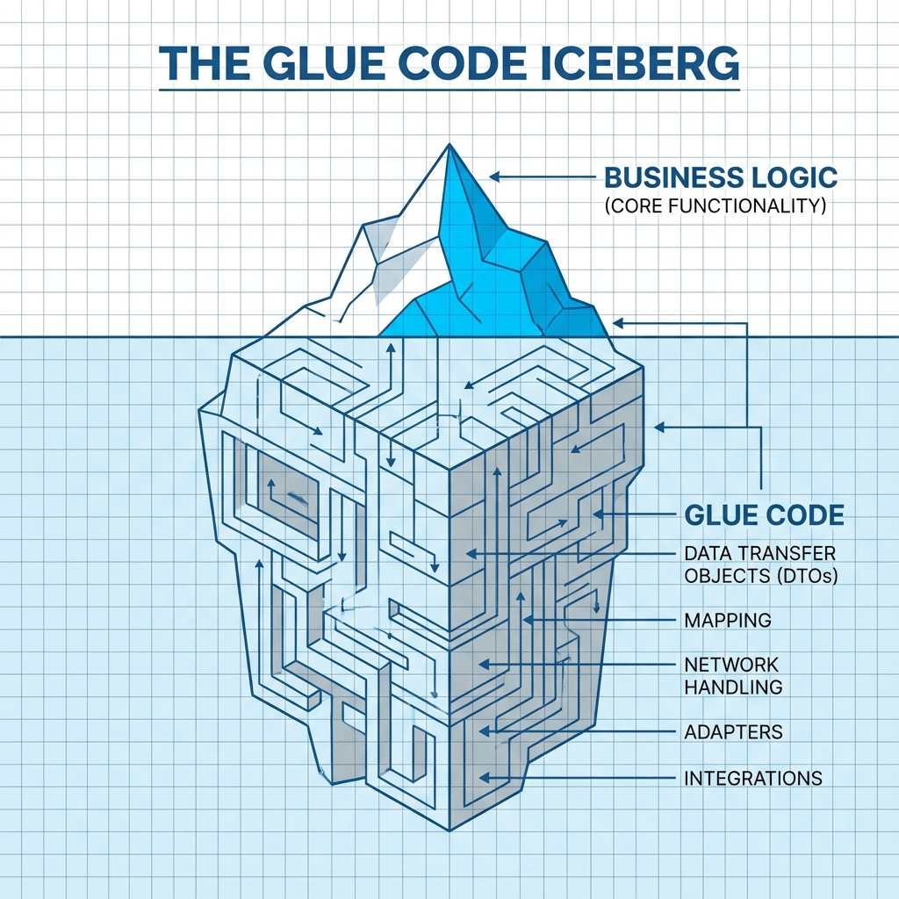
İpucu
Modern Stack: Harika görünen parçalar, ama hepsi birbirine koli bandıyla (Glue Code) tutturulmuş.
JSF: Tek parça döküm blok (Monolitik sağlamlık).
JSF Projesi: - Görünen Kod: %80 İş Mantığı (Java), %20 UI (XHTML) - Saklanan Kod: Network handling, DOM manipulation, State syncing → Framework hallediyor
Modern Stack Projesi: - Görünen Kod: %40 İş Mantığı, %60 Glue Code - Glue Code Nedir?: JSON parse, DTO mapping, HTTP status kontrolü, Loading spinner, Error boundary, Retry logic
Önemli
2024’ün geliştiricisi, mesaisinin büyük kısmını “iş problemini çözmeye” değil, “teknolojileri birbirine bağlamaya” harcıyor. JSON formatı uydu mu? State güncellendi mi? JSF bizi bu “hamallıktan” kurtarıyordu. Karşılığında özgürlüğümüzü alıyordu.
Sonuç: Separation of Concerns kazandırdı, ama karmaşıklık patladı.
6️⃣ Modern SSR: Eve Dönüş (2024+)
2020’lerde Neler Fark Edildi?
SPA’nın sorunları giderek belirginleşti: - Bundle size şişti (3-5 MB normal!) - SEO hala problem (Google bile indexlemeyi zor yapıyor) - Waterfall data fetching (her component kendi API’sını çağırıyor) - Complexity overload: 12 dosya sadece basit CRUD için
Next.js ve Server Components Vizyonu
React Server Components (RSC) + Server Actions = JSF’e geri dönüş (ama modern tooling ile)
JSF demiştik ki: - UI logic sunucuda (Managed Bean) - Component ağacı sunucuda (UIViewRoot) - Action methods sunucuda çalışır
Next.js (2024) diyor ki: - UI logic sunucuda (Server Component) - Component tree sunucuda render edilir - Server Actions sunucuda çalışır
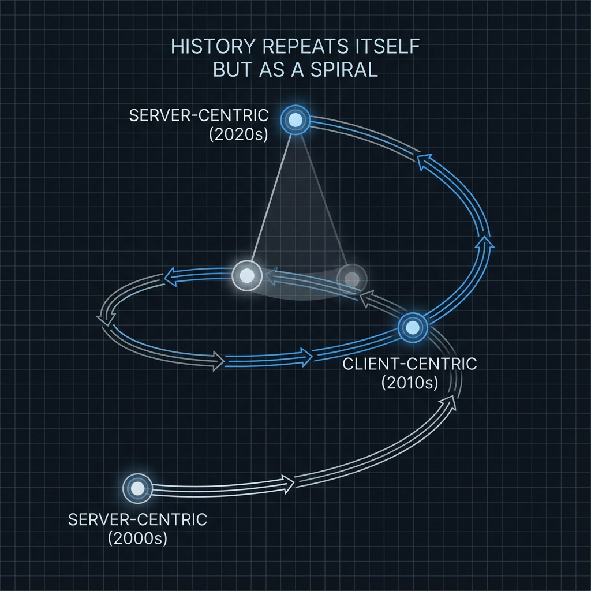Sarkaç Eve Döndü
JSF ile Next.js Karşılaştırması
| Özellik | JSF (2006) | Next.js RSC (2024) |
|---|---|---|
| Render Yeri | Sunucu (Java) | Sunucu (Node.js) |
| Action Methods | #{bean.save()} |
'use server' functions |
| State Taşıma | ViewState (hidden input) | Closure (encrypted metadata) |
| Tip Güvenliği | Java end-to-end | TypeScript end-to-end |
| Component Model | JSF Component Tree | React Component Tree |
| Data Fetching | Direct DB (JPA) | Direct DB (Prisma, supabase) |
En çarpıcı benzerlik: Her ikisi de "Veritabanı sunucuya yakın, UI logic da orda olsun" diyor!
Next.js Server Action Örneği
// app/actions.ts
'use server' // JSF'in @Named gibi!
import { db } from '@/lib/db';
export async function saveUser(formData: FormData) {
const username = formData.get('username') as string;
// Direkt veritabanına yaz (JPA repository gibi!)
await db.user.create({
data: { username }
});
revalidatePath('/users'); // Sayfayı yenile
}Farklar: Neden “Eskiye Dönüş” Değil?
- TypeScript: JSF (XML config + Java), Next.js (full type safety)
- Modern Tooling: Hot reload, Vite, modern DX
- Edge Computing: Sunucu coğrafi olarak dağıtılabiliyor
- Hibrit: Client component’ler interactivity için (JSF bu esnekliği vermiyordu)
- Streaming: HTML parça parça gönderilebiliyor (Suspense)
Not
“Spiral yukarı çıkarak dönüyor”: JSF’in felsefesi (server-centric) + Modern tooling + TypeScript + Edge = Next.js
Kod Arkeolojisi: İsimler Değişir, Desenler Kalır
Gelin, 20 yıl arayla yazılmış iki kod parçasına bakalım. Benzerlik şok edicidir.
Senaryo: Bir Kullanıcıyı Kaydetmek
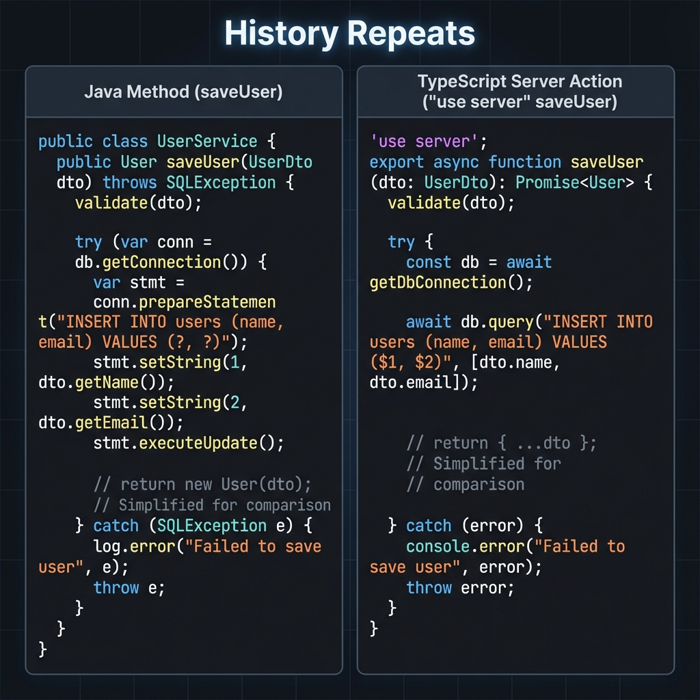History Repeats Code
Görsel 4: Tarih tekerrür ediyor. 2006’daki Managed Bean metodu ile 2024’teki Server Action arasındaki şaşırtıcı benzerlik.
Yorum: REST API yok. JSON parse etmek yok. fetch() yok. Sadece fonksiyon çağrısı var. Tarih tekerrür etti.
4. Gizli Kahraman: State Yönetimi (ViewState vs Closure)
JSF’in en çok eleştirilen yanı ViewState (o devasa şifreli hidden input) idi. Modern mimari bunu nasıl çözdü?
Karşılaştırma:
- JSF (2006): Sunucu durumunu (State) korumak için sayfaya gizli bir
<input type="hidden" name="javax.faces.ViewState">gömerdi. - Next.js (2024): Fonksiyonun bağlamını (Context) korumak için Closure kullanır ve bunu şifreleyip HTML’e gömer.
Aslında ikisi de aynı şeyi yapar: Stateless olan HTTP protokolü üzerinde, Stateful bir deneyim simüle etmek.
Not
Modern mimari, “Stateless” dogmasından vazgeçip, “Akıllı State” (Smart State) kavramına geçiş yapmıştır. Artık her şeyi sunucuda tutmuyoruz (RAM tasarrufu), ama her şeyi istemciye de yüklemiyoruz (Network tasarrufu).
7️⃣ Veri Perspektifi: Mimari Kararların Gerçek Maliyeti
Mimari seçimler sadece “hangi framework” sorusu değildir. Verinin nereden geldiği, nasıl işlendiği ve nereye gittiği en kritik karardır.
Temel Soru: Veri Nerede İşleniyor?
| Mimari | Veri Akışı | Network Hop |
|---|---|---|
| Server-Centric (JSF) | DB → Java → HTML | 1 (Tek round-trip) |
| SPA + REST | DB → Java → JSON → JS → DOM | 2+ (Çoklu round-trip) |
| RSC (Next.js) | DB → Node → HTML (+ JSON delta) | 1-2 (Hibrit) |
N+1 Query Problemi: Lazy Loading’in Bedeli


Senaryo: 100 kullanıcı listesi, her birinin departmanı gösterilecek.

JSF (Sunucu tarafı):
→ 1 SQL sorgusu, HTML client’a hazır gider
React SPA (Client tarafı):
→ 101 HTTP isteği (N+1 problem client’a taşındı)
Uyarı
Client tarafında Lazy Loading, sunucu tarafındaki N+1 probleminin daha kötü bir versiyonudur. Çünkü her “lazy” çağrı bir network round-trip’tir.
Over-fetching vs Under-fetching
| Problem | Açıklama | Sonuç |
|---|---|---|
| Over-fetching | Gereğinden fazla veri çekilir | REST /users → 50 alan döner, 3’ü kullanılır |
| Under-fetching | Eksik veri, ek istek gerekir | /users sonrası /users/1/orders lazım |
JSF avantajı: Sunucu neyi render edeceğini bilir, sadece gerekeni çeker.
SPA dezavantajı: API “ne lazım olur” bilmez, ya fazla ya eksik gönderir.
Veri Yoğunluğu ve Mimari Seçimi
| Düşük Etkileşim | Yüksek Etkileşim | |
|---|---|---|
| Çok Veri | ✅ Server Components (Admin, Dashboard) | ⚠️ SPA + GraphQL (E-ticaret) |
| Az Veri | 🟢 Statik Site (Blog) | 🔵 SPA + REST (Chat, Real-time) |

Veri Yoğunluğu vs Etkileşim
Yorumlama: - Sol üst (Çok veri, az etkileşim): JSF/PrimeFaces veya Server Components ideal - Sağ alt (Az veri, çok etkileşim): SPA ideal (Chat, real-time) - Ortada: Hibrit yaklaşımlar (Next.js RSC)
Payload Karşılaştırması: Aynı Sayfa, Farklı Mimariler
Senaryo: 100 satırlık kullanıcı tablosu
| Mimari | İlk Yükleme | Veri Transferi | Toplam | TTI* |
|---|---|---|---|---|
| JSF + PrimeFaces | 80 KB HTML | — | 80 KB | ~200ms |
| React SPA | 350 KB JS | + 45 KB JSON | 395 KB | ~800ms |
| Next.js RSC | 60 KB HTML + 20 KB JS | — | 80 KB | ~250ms |
*TTI: Time to Interactive
Waterfall: Client’ta mı, Server’da mı?


Client-side Data Fetching (SPA):
Sayfa yükle → JS parse → Veri iste → Bekle → Render → Alt veri iste → Bekle
[========] [=====] [=======] [===] [====] [==========] [===]
↑ Network ↑ Render ↑ N+1 başlıyor→ Waterfall: Kullanıcı uzun süre “Loading…” görür
Server-side Data Fetching (JSF/RSC):
İstek → Sunucu: Tüm veriyi çek + HTML üret → Tek response
[===] [===================================] [========]
↑ DB sorguları paralel ↑ Hazır HTML→ Tek round-trip: Kullanıcı direkt içerik görür
Kritik İçgörü: Data Proximity

Data Proximity Diagramı
“Veri sunucuya ne kadar yakınsa, mimari o kadar basit.”
| Mimari | Veri Mesafesi | Tipik Latency |
|---|---|---|
| JSF | DB ile aynı JVM | ~1-5ms |
| Next.js RSC | DB ile aynı sunucu/region | ~5-20ms |
| SPA + REST | Client → API → DB → API → Client | ~100-500ms |
Sonuç: Veri yoğun uygulamalarda (admin panel, dashboard, raporlama) sunucu tarafı render hem daha hızlı hem daha basittir.
8️⃣ JSF’ten Öğrenmemiz Gerekenler: Kayıp Best Practice’ler


JSF’te framework zorunlu kılıyordu, modern stack’te “best practice” diyoruz ama çoğu projede atlanıyor. Bu bölüm, JSF’in bize öğrettiği disiplinleri ve modern stack’te nasıl uygulanması gerektiğini anlatacağız.
Temel Tez
JSF’te “yanlış yapamazdınız” çünkü framework izin vermezdi. Modern stack’te “doğru yapmak” sizin sorumluluğunuzdadır.
1. Server-Side Validation: Güvenliğin Temeli
JSF Yaklaşımı (Zorunlu):
- Validasyon her zaman sunucuda çalışır
- Client bypass edilemez
- Hata mesajları merkezi (
<h:messages />)
Modern Stack’te Sık Yapılan Hata:
Modern Stack’te Doğru Yaklaşım:
// ✅ DOĞRU: Server-side validation (Zod + Server Action)
// app/actions.ts
'use server'
import { z } from 'zod';
const UserSchema = z.object({
email: z.string().email('Geçersiz email formatı'),
});
export async function createUser(formData: FormData) {
const result = UserSchema.safeParse({
email: formData.get('email'),
});
if (!result.success) {
return { error: result.error.flatten() }; // Sunucu doğrulaması!
}
await db.user.create({ data: result.data });
}Uyarı
Client-side validation UX içindir, güvenlik için değil. JSF bunu biliyordu. Her validation sunucuda tekrarlanmalıdır.
2. CSRF Koruması: Sessiz Bekçi
JSF Yaklaşımı (Otomatik):
- Her POST isteği ViewState ile doğrulanır
- Token olmadan işlem yapılamaz
- Sıfır konfigürasyon
Modern Stack’te Sık Atlanan:
Modern Stack’te Doğru Yaklaşım:
// ✅ Next.js Server Actions otomatik CSRF koruması sağlar
// Veya manuel: Double Submit Cookie pattern
// middleware.ts
import { csrf } from '@/lib/csrf';
export async function POST(request: Request) {
const token = request.headers.get('X-CSRF-Token');
if (!csrf.verify(token)) {
return Response.json({ error: 'Invalid CSRF' }, { status: 403 });
}
// ... işlem
}Checklist: - [ ] Her mutasyon (POST/PUT/DELETE) CSRF token gerektiriyor mu? - [ ] Token HttpOnly cookie’de mi saklanıyor? - [ ] SameSite=Strict kullanılıyor mu?
3. Tip Güvenliği: Uçtan Uca Bütünlük
JSF Yaklaşımı (Java End-to-End):
- Entity → Bean → View: Tek tip tanımı
- Refactoring güvenli (IDE tüm kullanımları bulur)
- Runtime tip hataları imkansız
Modern Stack’te Sık Yapılan Hata:
Modern Stack’te Doğru Yaklaşım:
Seçenek A: Shared Types (Monorepo)
Seçenek B: Code Generation (OpenAPI/GraphQL)
Seçenek C: tRPC (End-to-End Type Safety)
Önemli
JSF’te tip uyumsuzluğu derleme hatasıydı. Modern stack’te runtime hatasıdır. tRPC veya code generation kullanarak bu boşluğu kapatın.
4. Lifecycle Disiplini: Öngörülebilir Davranış
JSF Yaklaşımı (6 Faz Garantisi):
Restore View → Apply Request → Validate → Update Model → Invoke Action → Render- Her istek aynı sırayla işlenir
- Validasyon her zaman model güncellenmeden önce çalışır
- Side effect’ler sadece Invoke Application fazında
Modern Stack’te Kaos:
Modern Stack’te Doğru Yaklaşım:
// ✅ Explicit lifecycle with state machine (XState veya manuel)
type State = 'idle' | 'validating' | 'submitting' | 'success' | 'error';
const [state, setState] = useState<State>('idle');
const handleSubmit = async () => {
setState('validating');
const validation = await validate(formData);
if (!validation.success) {
setState('error');
return;
}
setState('submitting');
await saveUser(formData);
setState('success');
};Veya React 19 + Server Actions:
// ✅ useActionState - JSF benzeri form lifecycle
const [state, formAction, isPending] = useActionState(createUser, initialState);
return (
<form action={formAction}>
{state.error && <ErrorMessage error={state.error} />}
<input name="email" />
<button disabled={isPending}>
{isPending ? 'Kaydediliyor...' : 'Kaydet'}
</button>
</form>
);5. Merkezi Hata Yönetimi
JSF Yaklaşımı (Tek Nokta):
Modern Stack’te Dağınık Hatalar:
Modern Stack’te Doğru Yaklaşım:
// ✅ Error Boundary + Toast System
// app/layout.tsx
export default function Layout({ children }) {
return (
<ErrorBoundary fallback={<ErrorPage />}>
<ToastProvider>
{children}
</ToastProvider>
</ErrorBoundary>
);
}
// Herhangi bir component'ten:
const { toast } = useToast();
try {
await saveUser(data);
toast.success('Kaydedildi');
} catch (e) {
toast.error(e.message); // Merkezi bildirim
}6. Session ve State Tutarlılığı
JSF Yaklaşımı (Sunucu Otoritesi):
- Sepet durumu sadece sunucuda
- Tarayıcı sekmesi, mobil uygulama → Hepsi aynı durumu görür
- Manipülasyon imkansız
Modern Stack’te Tutarsızlık:
Modern Stack’te Doğru Yaklaşım:
// ✅ Server as Source of Truth
// Sepet sunucuda, client sadece görüntüler
const { data: cart } = useQuery(['cart'], fetchCart);
// Ekleme işlemi sunucuya gider
const addToCart = useMutation({
mutationFn: (item) => api.post('/cart/add', item),
onSuccess: () => queryClient.invalidateQueries(['cart']),
});Aksiyon Listesi: Projenizi Denetleyin
Mevcut SPA/SSR projenizde şu soruları sorun:
- Validation: Tüm form validasyonları sunucuda tekrarlanıyor mu?
- CSRF: Mutasyon endpoint’leri token doğrulaması yapıyor mu?
- Types: Backend-Frontend tip senkronizasyonu otomatik mi?
- Lifecycle: Form submission state’leri explicit mi (loading, error, success)?
- Errors: Hata mesajları merkezi bir sistemden mi geliyor?
- State: Kritik veriler (sepet, kullanıcı) sunucuda mı tutuluyor?
Not
JSF bu soruların hepsine “evet” demek zorundaydı. Modern stack’te “evet” demek sizin tercihinizdir. Tercih etmezseniz, güvenlik ve tutarlılık riske girer.
9️⃣ Hangi Mimariyi Seçmeli? (Karar Çerçevesi)
Soruyu doğru sormalıyız: “Hangi teknoloji daha iyi?” değil, “Hangi mimari bu projenin ihtiyaçlarına uygun?”
Karar Ağacı (Decision Tree)

Karar Ağacı
Mimari Seçim Kriterleri
| Kriter | Server-Centric (JSF) | Client-Centric (SPA) | Hybrid (SSR) |
|---|---|---|---|
| SEO Önemli mi? | ✅ Mükemmel | ❌ Zor | ✅ Mükemmel |
| Veri Yoğun UI | ✅ İdeal | ❌ Yorucu | ⚠️ Orta |
| Real-time Updates | ❌ Zayıf | ✅ İdeal | ✅ İyi |
| Geliştirme Hızı (CRUD) | ✅ Çok Hızlı | ❌ Yavaş | ⚠️ Orta |
| Özelleştirme | ❌ Zor | ✅ Tam Kontrol | ✅ İyi |
| Java Team | ✅ İdeal | ❌ Öğrenme eğrisi | ⚠️ Orta |
Pratik Öneriler
JSF (PrimeFaces) seçin eğer: - Çoğunlukla veri girişi, tablolar, formlar varsa - Ekip Java biliyorsa, JavaScript bilmiyorsa - Hız kritik (6 ayda 50 ekran yapılacak) - İç kullanıcılar için (B2B/Internal)
Modern SPA seçin eğer: - SEO kritikse (B2C, marketing) - Çok dinamik, interaktif UI gerekiyorsa - Ekip frontend uzmanıysa - Mobil first tasarım şartsa
Hybrid (Next.js SSR) seçin eğer: - İkisinin avantajlarını istiyorsanız - SEO + Dinamik UI gerekiyorsa - Type safety uçtan uca istiyorsanız
Önemli
Mimari kararı teknoloji değil, bağlamdır. “Modern” olmak için React seçmek, 3x daha yavaş geliştirmeyi kabullenmek demektir. “Eski” kaldı diye JSF’i terk etmek, kanıtlanmış çözümden vazgeçmektir.
2️⃣ Büyük Resim: Mimari Sarkaç (The Pendulum)
Yazılım dünyası doğrusal bir çizgide ilerlemez; bir sarkaç gibi salınır. Biz şu an, sarkacın tekrar “Sunucu” (Server) tarafına döndüğü tarihi bir ana tanıklık ediyoruz.

Mimari Sarkaç
Aydınlanma Anı (The Aha! Moment)
- Dün (JSF):
h:commandButtonile sunucudaki bir Java metodunu çağırırdık. - Bugün (Next.js):
Server Actionsile sunucudaki bir TypeScript fonksiyonunu çağırıyoruz. - Fark: Aradaki teknoloji (XML vs JSX, HTTP Session vs Closure) değişti, ama Mindset aynı: “Veri nerede duruyorsa, işlem orada yapılmalıdır.”
🎯 Ne Konuştuk? Farklı Perspektiflerden Neler Gördük?
“Bu sunum bana ne katacak?” — Uzmanlık alanınıza göre konuşacağımız konular:
👨💻 Backend Developer (Java/Spring/Node)
- REST API’lerinizin neden “glue code fabrikası” haline geldiğini konuşacağız
- N+1 query probleminin client’a taşındığında nasıl katlanarak büyüdüğünü göstereceğiz
- Server Actions’ın aslında RPC’nin modern hali olduğunu keşfedeceğiz
- “Frontend ekibi neden bu kadar dosya istiyor?” sorusunun mimari cevabını tartışacağız
🎨 Frontend Developer (React/Vue/Angular)
useEffectkaosunun neden kaçınılmaz olduğunu ve JSF’in bunu 20 yıl önce nasıl çözdüğünü inceleyeceğiz- Redux/Zustand karmaşıklığının state’in yanlış yerde tutulmasından kaynaklandığını göstereceğiz
- Server Components’ın neden “geri adım” değil, “yukarı çıkış” olduğunu tartışacağız
- 12 dosya probleminin kök nedenini ve nasıl azaltılacağını ele alacağız
📱 Mobile Developer (React Native/Flutter)
- Web’in “her tıklamada sunucuya git” problemini neden yeniden kucakladığını konuşacağız
- Offline-first mimarinin web’de neden hala zor olduğunu karşılaştıracağız
- API tasarımında over-fetching vs under-fetching dengesini inceleyeceğiz
- BFF (Backend for Frontend) pattern’inin neden mobil için kritik olduğunu tartışacağız
🔧 Fullstack Developer
- “Her iki tarafı da biliyorum ama neden bu kadar yoruluyorum?” sorusunun cevabını arayacağız
- JSF’in tek stack avantajını, modern tooling ile nasıl geri kazanacağınızı göstereceğiz
- tRPC/Server Actions ile tip güvenliğini uçtan uca nasıl sağlayacağınızı tartışacağız
- Mimari seçimlerinizi hıza, güvenliğe ve bakım maliyetine göre değerlendireceğiz
🔄 Büyük Resim: Mimari Sarkaç (The Pendulum)
Yazılım dünyası doğrusal bir çizgide ilerlemez; bir sarkaç gibi salınır. Biz şu an, sarkacın tekrar “Sunucu” (Server) tarafına döndüğü tarihi bir ana tanıklık ediyoruz.
Mimari Sarkaç
Aydınlanma Anı (The Aha! Moment)
- Dün (JSF):
h:commandButtonile sunucudaki bir Java metodunu çağırırdık. - Bugün (Next.js):
Server Actionsile sunucudaki bir TypeScript fonksiyonunu çağırıyoruz. - Fark: Aradaki teknoloji (XML vs JSX, HTTP Session vs Closure) değişti, ama Mindset aynı: “Veri nerede duruyorsa, işlem orada yapılmalıdır.”
🎯 Ne Konuştuk? Farklı Perspektiflerden Neler Gördük?
“Bu sunumda neler konuştuk?” — Uzmanlık alanınıza göre ele aldığımız konular:
👨💻 Backend Developer (Java/Spring/Node)
- REST API’lerinizin neden “glue code fabrikası” haline geldiğini konuştuk
- N+1 query probleminin client’a taşındığında nasıl katlanarak büyüdüğünü gördük
- Server Actions’ın aslında RPC’nin modern hali olduğunu keşfettik
- “Frontend ekibi neden bu kadar dosya istiyor?” sorusunun mimari cevabını tartıştık
🎨 Frontend Developer (React/Vue/Angular)
useEffectkaosunun neden kaçınılmaz olduğunu ve JSF’in bunu 20 yıl önce nasıl çözdüğünü inceledik- Redux/Zustand karmaşıklığının state’in yanlış yerde tutulmasından kaynaklandığını gördük
- Server Components’ın neden “geri adım” değil, “yukarı çıkış” olduğunu tartıştık
- 12 dosya probleminin kök nedenini ve nasıl azaltılabileceğini ele aldık
📱 Mobile Developer (React Native/Flutter)
- Web’in “her tıklamada sunucuya git” problemini neden yeniden kucakladığını konuştuk
- Offline-first mimarinin web’de neden hala zor olduğunu karşılaştırdık
- API tasarımında over-fetching vs under-fetching dengesini inceledik
- BFF (Backend for Frontend) pattern’inin neden mobil için kritik olduğunu tartıştık
🔧 Fullstack Developer
- “Her iki tarafı da biliyorum ama neden bu kadar yoruluyorum?” sorusunun cevabını aradık
- JSF’in tek stack avantajını, modern tooling ile nasıl geri kazanabileceğinizi gösterdik
- tRPC/Server Actions ile tip güvenliğini uçtan uca nasıl sağlayabileceğinizi tartıştık
- Mimari seçimlerinizi hıza, güvenliğe ve bakım maliyetine göre değerlendirdik
⚙️ DevOps / Platform Engineer
- JSF’in “tek WAR, tek sunucu” basitliğinden “12 servis, 3 CDN, 2 edge” karmaşıklığına geçişi inceledik
- Stateful vs Stateless deployment’ın altyapı maliyetine etkisini konuştuk
- Session Replication (JSF) vs JWT/Redis (SPA) operasyonel farklarını karşılaştırdık
- Bundle size, cold start, edge caching gibi modern deployment zorluklarını ele aldık
- “Neden artık sadece
mvn deployyetmiyor?” sorusunu cevapladık
🏗️ Architect / Tech Lead
- Teknoloji seçimlerinin 25 yıllık tarihsel bağlamını birlikte keşfettik
- “Modern olmak” ile “doğru mimari” arasındaki farkı netleştirdik
- Ekip kompozisyonuna göre hangi stack’in ROI’si yüksek olduğunu değerlendirdik
- JSF’in zorunlu kıldığı best practice’leri modern stack’te nasıl uygulayabileceğinizi tartıştık
🎓 Junior Developer /
- Web mimarisinin “neden böyle evrildiğini” hikaye formatında anlattık
- Buzzword’lerin arkasındaki gerçek problemleri açıkladık
- Kariyerinizde karşılaşacağınız mimari tartışmalara hazırladık
- “Eski teknoloji = kötü” yanılgısını birlikte sorguladık
🏁 Kapanış


Son Söz: JSF öğrenmiş bir mühendis, Next.js öğrenirken zorlanmaz. Çünkü o, dağıtık sistemlerin zorluklarını ve sunucu tarafı render etmenin konforunu zaten biliyordur.
“Teknolojiler değişir, mimari prensipler baki kalır.”